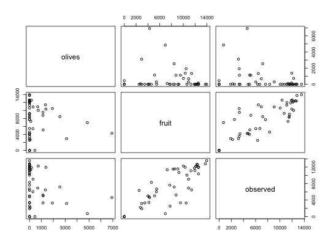

To estimate the total surface occupied by fruit trees in 3 small areas (R63, R67, and R68) of Navarre (Spain) in 2001, a sample of 47 square segments has been taken. The experimental units are square segments or quadrats of 4 hectares, obtained by random sampling after overlaying a square grid on the study domain.
SATFRUIT
A data frame with 47 observations on the following 17 variables:
quadrat (number of the sampled segment or quadrat)
smallarea (the small area, a factor with levels R63, R67, and R68)
wheat (area classified as wheat in the sampled segment)
barley (area classified as barley in the sampled segment)
nonarable (area classified as non-arable in the sampled segment)
corn (area classified as corn in the sampled segment)
sunflower (area classified as sunflower in the sampled segment)
vineyard (area classified as vineyard in the sampled segment)
grass (area classified as grass in the sampled segment)
asparagus (area classified as asparagus in the sampled segment)
alfalfa (area classified as alfalfa in the sampled segment)
rape (area classified as rape in the sampled segment)
rice (area classified as rice in the sampled segment)
almonds (area classified as almonds in the sampled segment)
olives (area classified as olives in the sampled segment)
fruit (area classified as fruit trees in the sampled segment)
observed (the observed area of fruit trees in the sampled segment)
Militino, A. F., et. al. 2006. “Using Small Area Models to Estimate the Total Area Occupied by Olive Trees.” Journal of Agricultural, Biological and Environmental Statistics, 11: 450-461.
Ugarte, M. D., Militino, A. F., and Arnholt, A. T. 2015. Probability and Statistics with R, Second Edition. Chapman & Hall / CRC.
pairs(SATFRUIT[,15:17])